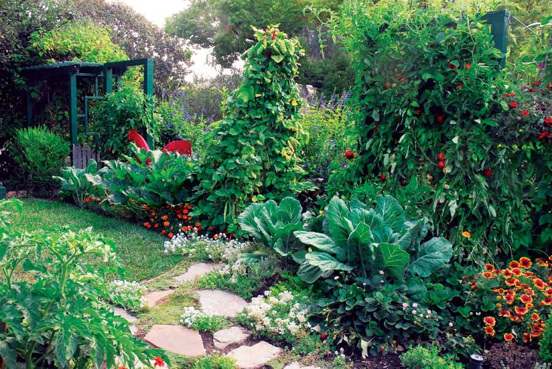

Grow $700 Of Food In 100 Square Feet!
If more Americans grew a little food - instead of so much grass - our savings on grocery bills would be astounding.
By Rosalind Creasy with Cathy Wilkinson Barash
December 2009/January 2010
In 2007, I began to get lots of questions about growing food to help save money. Then, while working on my new book, Edible Landscaping, I had an aha! moment. As I was assembling statistics to show the wastefulness of the American obsession with turf, I wondered what the productivity of just a small part of American lawns would be if they were planted with edibles instead of grass.
I wanted to pull together some figures to share with everyone, but calls to seed companies and online searches didn’t turn up any data for home harvest amounts - only figures for commercial agriculture. From experience, I knew those commercial numbers were much too low compared with what home gardeners can get. For example, home gardeners don’t toss out misshapen cucumbers and sunburned tomatoes. They pick greens by the leaf rather than the head, and harvests aren’t limited to two or three times a season.
For years, I’ve known that my California garden produces a lot. By late summer, my kitchen table overflows with tomatoes, peppers and squash; in spring and fall, it’s broccoli, lettuces and beets. But I’d never thought to quantify it. So I decided to grow a trial garden and tally up the harvests to get a rough idea of what some popular vegetables can produce.
The Objective
I took a 5-by-20-foot section of garden bed by my tiny lawn to see how much I could grow in just that 100 square feet. I wanted to produce a lot of food, and because it was part of my edible landscape, it had to look good, too.
The Plants
I wanted to make this garden simple - something anyone in the United States could grow. I didn’t include fancy vegetable varieties; I chose those available at my local nursery as transplants. I also selected vegetables that are expensive to buy at the supermarket, as well as varieties that my experience has told me produce high yields.
The first season (spring/summer 2008), I grew the following:
- Two tomato plants: ‘Better Boy’ and ‘Early Girl’
- Bell peppers, which are often luxuries at the market when fully colored: two ‘California Wonder,’ two ‘Golden Bell,’ one ‘Orange Bell,’ and one ‘Big Red Beauty’
- Four zucchinis: two green ‘Raven’ and two ‘Golden Dawn’
- Four basils (expensive in stores but essential in the kitchen)
- 18 lettuces: six ‘Crisp Mint’ romaine, six ‘Winter Density’ romaine, and six ‘Sylvestra’ butterhead
The only plants I grew from seed were the zucchinis. Hindsight is always 20/20; I should have thinned each of the zucchini hills to a single seedling, but I left two in each hill. As a result, I needed to come up with creative uses for zucchini, including giving them away as party favors at a dinner I hosted.
It looked a bit barren at first, but the garden flourished - especially the lettuces. Within several weeks, I started picking outer leaves for salads for neighbors and myself. The weather forecast predicted temperatures in the upper 90s. I was heading out of town and feared the lettuces would bolt, so I harvested the entire heads earlier than I normally would. Within about a month of transplanting the lettuces into the garden, I had grown enough for 230 individual servings of salad. And by that time, the tomatoes, zucchinis and pepper plants had nearly filled in the bed.
A Living Spreadsheet
Although I’ve grown hundreds of varieties of vegetables over the years and kept rough notes, this garden was different.
My co-author, Cathy, created spreadsheets for each type of plant, and we kept meticulous records each time we harvested. We recorded the amount - pounds and ounces, as well as number of fruits (for each cultivar of tomato, zucchini and peppers) or handfuls (for lettuces and basil).
The Investment: Time and Money
This 100-square-foot plot took about eight hours to prepare, including digging the area, amending the soil, raking it smooth, placing stepping stones, digging the planting holes, adding organic fertilizer, and setting the plants and seeds in the ground. On planting day, I installed homemade tomato cages (store-bought ones are never tall or sturdy enough) and drip irrigation. And I mulched well - a thick mulch is key to cutting down on weeding, which is the biggest time waste in the garden, in my opinion.
We hand-watered the bed for a few weeks to allow the root systems to grow wide enough to reach the drip system. Three times over the first month we routed out a few weeds, which was only necessary until the plants filled in and shaded the soil.
Tomatoes in my arid climate are susceptible to bronze mites that cut down on the harvest and flavor. To prevent mites, we sprayed sulfur in mid-July and again in mid-August, which took about 30 minutes each time. In rainy climates, gardeners often need to prevent early blight on tomatoes. To do so, rotate tomato plants to a different area of the garden each year and mulch well. After the plants are a few feet tall, remove the lower 18 inches of leafy stems to create good air circulation.
For the rest of the season, we tied the tomatoes and peppers to the stakes as they grew upward, cut off the most rampant branches, and harvested the fruits. The time commitment averaged about an hour and a half each week. (Our harvesting was more time-consuming than average because we counted, weighed and recorded everything we picked.)
The Results
To determine what my harvest would cost in the market, I began checking out equivalent organic produce prices in midsummer. On a single day in late August, I harvested 49 tomatoes, nine peppers, 15 zucchinis of many sizes, and three handfuls of basil - which would have totaled $136 at my market that day.
From April to September, this little organic garden produced 77.5 pounds of tomatoes, 15.5 pounds of bell peppers, 14.3 pounds of lettuce, and 2.5 pounds of basil - plus a whopping 126 pounds of zucchini! Next time I won’t feel bad about pulling out those extra plants.
I figured the total value of my 2008 summer trial garden harvest was $746.52. In order to get a fair picture, I also needed to subtract the cost of seeds, plants and compost (I can’t make enough to keep up with my garden), which added up to $63.09. That leaves $683.43 in savings on fresh vegetables. Of course, prices vary throughout the season and throughout the country. I live in northern California, and for comparison, Cathy, who lives in Iowa, checked out her prices and figured the same amount of organic produce in her area would be worth $975.18.
The Big Picture
I started this garden to see what impact millions of organically grown 100-square-foot gardens would have if they replaced the equivalent acreage of lawns in this country.
According to the Garden Writers Association, 84 million U.S. households gardened in 2009. If just half of them (42 million) planted a 100-square-foot garden, that would total 96,419 acres (about 150 square miles) no longer in lawns, and no need for the tremendous resources that go into keeping them manicured. If folks got even one-half of the yields I got, the national savings on groceries would be stupendous: about $14.35 billion! So, a 100-square-foot food garden can be a big win-win for anyone who creates one - and for our planet.
Looking Forward
I have decided to keep the records from my 100-square-foot garden going indefinitely. Last fall, I planted broccoli, chard, snap peas, cilantro, a stir-fry greens mix, kale and scallions. This took much less time, as the soil preparation was done and the drip system was in place.
In the summer, I planted different tomato varieties, added cucumbers, a tipi of pole beans, chard and collards. Remember, I’m growing all of this in a bed that is just 5-by-20 feet! You can check my website to follow the progress of the garden, and to download easy-to-use spreadsheets to help you track your own garden harvests.
Read More, Share Your Results
My lecture audiences, the media and visiting gardeners are excited to report on data about how much food a gardener can produce. Other organizations seem to be on the same wavelength. In spring of 2008, Burpee started to record harvest amounts; Roger Doiron of Kitchen Gardeners International kept a tally of his family’s summer garden; and Mother Earth News put out a call for readers to share information about their most productive plants.
While you’re here, please share your totals with us and other gardeners by posting a comment in the comments section below. We’re looking forward to hearing about harvests from folks all over the country.
Getting the Most Food from a Small Area
- Choose indeterminate tomatoes. They keep growing and producing fruit until a killing frost. (Determinate varieties save space but ripen all at once.)
- In spring, plant cool-season vegetables, including lettuce, mesclun and stir-fry green mixes, arugula, scallions, spinach and radishes. They are ready to harvest in a short time, and they act as space holders until the warm-season veggies fill in.
- Grow up. Peas, small melons, squash, cucumbers and pole beans have a small footprint when grown vertically. Plus, they yield more over a longer time than bush types.
- Plants such as broccoli, eggplant, peppers, chard and kale are worth the space they take for a long season. As long as you keep harvesting, they will keep producing until frost
Rosalind Creasy has been growing edibles in her beautiful northern California garden for 40 years. The expanded second edition of her landmark book, Edible Landscaping, will be released in April 2010.
Cathy Wilkinson Barash, author of 13 books, including Edible Flowers: From Garden to Palate, spent parts of the past three years working with Creasy in California . She helped document, harvest and feast from the 100-square-foot garden.
|
SAXON HOLT & ROSALIND CREASY The total value of the fresh vegetables author Rosalind Creasy grew in her 100-square-foot garden in 2008 was $683.43! |
ROSALIND CREASY The author’s 2008 garden was integrated beautifully into her yard. |
 ROSALIND CREASY In her 2009 garden, the author grew (from left) ‘Celebrity’ tomatoes on the green trellis; two basil plants in front; ‘Raven’ zucchini with three chard plants behind it; ‘Musica’ string beans on a tipi; an arbor with ‘Early Girl’ tomatoes; two collard plants; and two ‘Blushing Beauty’ bell peppers. |
 ROSALIND CREASY Luscious homegrown tomatoes, spicy basil and always-prolific zucchini were all harvested from the author’s 100-square-foot garden bed in the summer of 2008. |
ROSALIND CREASY Even after factoring in the expense of some plants and fertilizer, a small garden can still save you big bucks on groceries. |
ROSALIND CREASY Author Ros Creasy in her northern California trial garden in 2008. |
|
ROSALIND CREASY The author’s pet rooster, 15-year-old Mr. X, checks out the cool veggie garden. |
ROSALIND CREASY Within a month, just 18 plants yielded 230 individual servings of salad! |
|